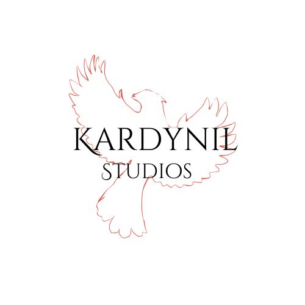

Overview
Purpose
The purpose I want to expound upon for Kardynil, is to make video games that can bring smiles to faces and create memories to look back on.
Audience
The audience that I hope to reach with my products includes gamers of all ages 13 and up. I hope that the games I make are able to reach people looking to create memories with friends, siblings, and even their children.
Branding
Website Logo
Style Guide
Color Palette
| Primary | Secondary | Accent 1 | Accent 2 |
|---|---|---|---|
Typography
Heading Font: Cinzel
Paragraph Font: Helvetica
Normal paragraph example
An example of one of the games I have planned, Fae is a prank and break centered game. In Fae, players take on the role of mischievous fairies who are trying to prevent other players from earning points. The game is designed to be played with 6-10 players per lobby and is intended to be a fun and light-hearted experience for all involved.
Colored paragraph example
On the more adventurous side, I have a game idea base around exploration, swords and sorcery, and many other things like making flying ships. Meirian Adventures is a game that I plan on making based off my homemade D&D world. This game would be completly open world, complete with underground cities and caverns, flying islands, and many other things to explore.
Navigation with Hover
Site Map
Wireframes
Home